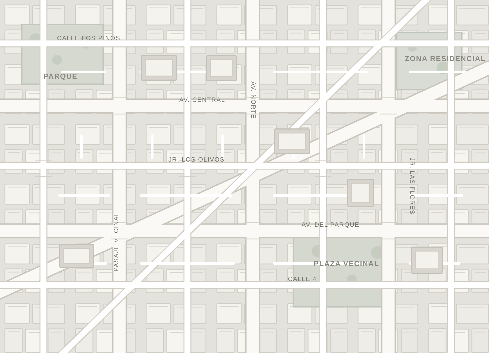
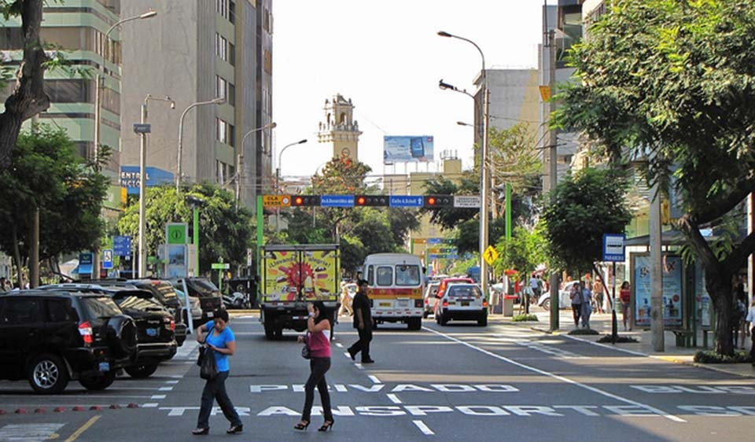
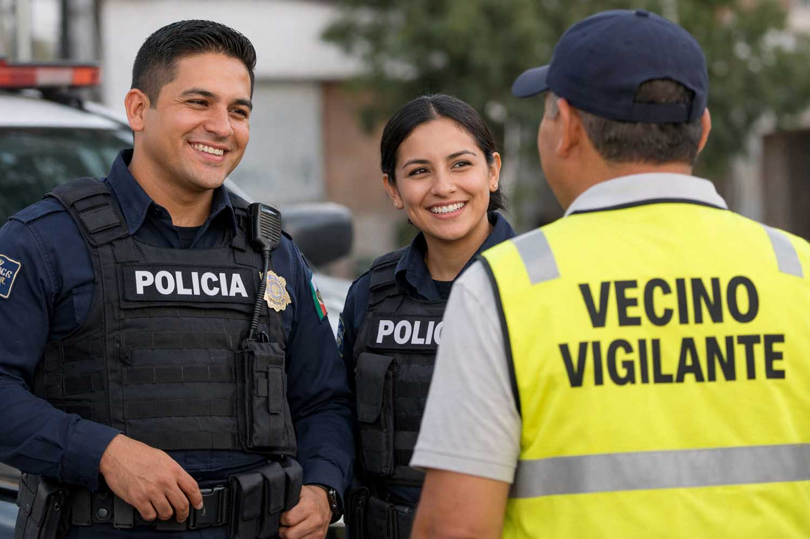

Consultar el entorno
Revisar una vista de referencia del área y reconocer los avisos ilustrativos que podrían aparecer en el mapa.
SEGURIDAD LOCAL · INFORMACIÓN COMUNITARIA
SafeTrack es una propuesta de plataforma de seguridad ciudadana que reúne reportes comunitarios y avisos de situaciones de riesgo para ayudar a las personas a comprender qué sucede en su entorno cercano.

VISTA DE REFERENCIA DEL ENTORNO
01 · PROPÓSITO DEL PROYECTO
La información sobre situaciones de riesgo puede encontrarse dispersa entre publicaciones, mensajes y avisos informales. Esto dificulta identificar qué ocurre en una zona y distinguir entre información reciente, antigua o todavía no verificada.
SafeTrack propone un espacio digital donde la comunidad pueda consultar avisos locales y aportar información de manera responsable. Su enfoque combina la referencia geográfica, la comunicación comunitaria y la prevención, sin reemplazar los canales oficiales ni los servicios de emergencia.
Conocer más sobre el propósito02 · PROPUESTA DE USO
El recorrido reúne las acciones principales para consultar el entorno, comprender los avisos y participar de manera responsable.
Revisar una vista de referencia del área y reconocer los avisos ilustrativos que podrían aparecer en el mapa.
Leer el tipo de situación, su contexto y el estado de la información, diferenciando un reporte de ejemplo de uno verificado.
Conocer cómo la comunidad podría aportar reportes y por qué es importante evitar la difusión de información no confirmada.
03 · NUESTRA APLICACIÓN
Explora el mapa comunitario, consulta avisos del entorno y revisa los detalles que comparten otros usuarios.
SAFETRACK · PANEL DE SEGURIDAD
Recorre diferentes calles, identifica avisos comunitarios y consulta los detalles de cada reporte desde una sola vista.
VISTA DEL MAPA COMUNITARIO

Arrastra el mapa para explorar otras zonas
Mapa de calles · vista de referencia04 · INFORMACIÓN QUE PODRÍA MOSTRARSE
Estas categorías organizan los avisos que pueden ayudar a comprender las situaciones de interés en el entorno.
Avisos generales sobre incidentes reportados en una zona.
Información general sobre disturbios o situaciones que afecten el tránsito cotidiano.
Referencias públicas sobre concentraciones y posibles restricciones de circulación.
Comunicaciones de interés para que las personas evalúen su entorno con prudencia.
05 · COMUNIDAD
La propuesta de SafeTrack considera que los ciudadanos pueden contribuir compartiendo información de interés local. Para que esta participación sea responsable, los avisos deben incluir contexto y distinguir claramente aquello que todavía no ha sido verificado.
La participación comunitaria es un complemento informativo; no sustituye la denuncia formal ni la comunicación con las autoridades competentes.
Ver formulario de interés06 · GALERÍA DE IMÁGENES
Imágenes de referencia para contextualizar los temas que aborda el proyecto.

El contexto local es parte importante de la información preventiva.

La comunicación debe respetar los canales y las competencias oficiales.
La seguridad requiere atención al entorno y comunicación responsable.
Los avisos deben ser claros, contextualizados y prudentes.
Las fuentes y el contexto ayudan a interpretar los acontecimientos.
Los medios digitales pueden facilitar la difusión responsable de información.
07 · VIDEO DE PRESENTACIÓN
Este video presenta el propósito de SafeTrack, la organización de su interfaz y el papel de la participación comunitaria.
Conoce la propuesta, sus secciones principales y la experiencia que plantea SafeTrack.
SAFETRACK · PRESENTACIÓN CONCEPTUAL · SIN AUDIO
08 · PARTICIPACIÓN
Selecciona tu perfil y señala qué apartado de SafeTrack te interesa conocer.
Al completar los campos, podrás continuar a la página de confirmación.